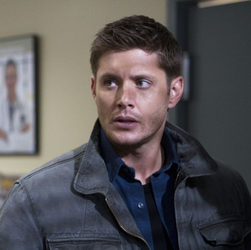

Dean Winchester é o irmão mais velho da série *Supernatural*, conhecido por seu caráter impetuoso e seu senso de dever inabalável. Crescendo em uma vida de caçador após a morte de sua mãe, Dean desenvolveu uma relação próxima e protetora com seu irmão, Sam. Ao longo da série, ele enfrenta desafios enormes, como a responsabilidade pela proteção de seu irmão e pela luta contra as forças sobrenaturais que ameaçam o mundo.
Dean tem uma personalidade confiante e irreverente, muitas vezes usando humor e sarcasmo para lidar com as situações tensas. Apesar de sua fachada durona, Dean tem um lado sensível, muitas vezes refletindo sobre a culpa e o peso das escolhas que faz, especialmente em relação à sua família. Sua lealdade inquestionável a Sam e sua determinação em impedir o mal são os pilares que o definem ao longo da série.
Dean Winchester
História de Origem
Habilidades e Poderes
- Habilidade excepcional em combate corpo a corpo
- Conhecimento avançado sobre o sobrenatural
- Capacidade de pilotar e manusear várias armas de fogo e veículos
Relações
- Sam Winchester - irmão
- Mary Winchester - mãe
- John Winchester - pai